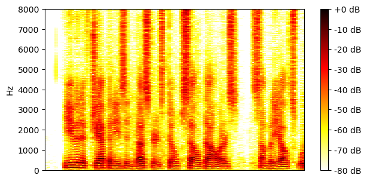
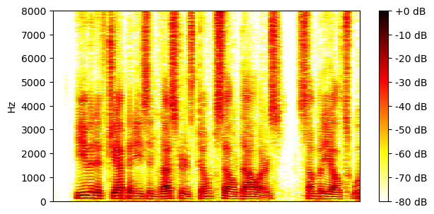
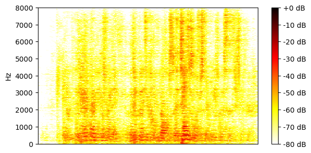
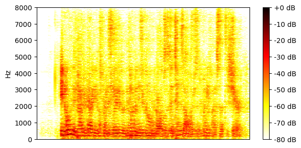

Reverberant WSJ0-2mix 16 kHz test set
| Mixture |
|
|||
|---|---|---|---|---|
| Ground-truth sources |

SI-SNR = -2.47 dB |
SI-SNR = 2.14 dB |

SI-SNR = -78.24 dB |

SI-SNR = -78.24 dB |
| Method | Separated source 0 | Separated source 1 | Separated source 2 | Separated source 3 |
| Matched supervised 2-source mixtures |
SI-SNR = 12.08 dB |
SI-SNR = 14.48 dB |
SI-SNR = -48.36 dB |
SI-SNR = -48.39 dB |
| Mismatched supervised 2-source mixtures |
SI-SNR = 11.82 dB |
SI-SNR = 6.00 dB |
SI-SNR = -57.30 dB |

SI-SNR = -68.94 dB |
| Matched unsupervised 2-source mixtures |
SI-SNR = 11.86 dB |

SI-SNR = 14.29 dB |
SI-SNR = -51.03 dB |
SI-SNR = -52.74 dB |
| Matched supervised 1-or-2-source mixtures |
SI-SNR = 13.33 dB |

SI-SNR = 15.69 dB |
SI-SNR = -41.74 dB |
SI-SNR = -43.12 dB |
| Mismatched supervised 1-or-2-source mixtures |
SI-SNR = 13.10 dB |
SI-SNR = 6.72 dB |
SI-SNR = -44.79 dB |
SI-SNR = -68.88 dB |
| Matched unsupervised 1-or-2-source mixtures |
SI-SNR = 14.72 dB |
SI-SNR = 16.93 dB |
SI-SNR = -44.54 dB |

SI-SNR = -45.43 dB |
| Mixture |
|
|||
|---|---|---|---|---|
| Ground-truth sources |
SI-SNR = 3.42 dB |
SI-SNR = -3.57 dB |

SI-SNR = -81.98 dB |

SI-SNR = -81.98 dB |
| Method | Separated source 0 | Separated source 1 | Separated source 2 | Separated source 3 |
| Matched supervised 2-source mixtures |
SI-SNR = 1.73 dB |
SI-SNR = -4.38 dB |
SI-SNR = -59.43 dB |
SI-SNR = -73.88 dB |
| Mismatched supervised 2-source mixtures |
SI-SNR = 0.92 dB |
SI-SNR = -3.81 dB |
SI-SNR = -69.61 dB |
SI-SNR = -70.83 dB |
| Matched unsupervised 2-source mixtures |
SI-SNR = 4.66 dB |
SI-SNR = -2.09 dB |

SI-SNR = -62.99 dB |
SI-SNR = -68.05 dB |
| Matched supervised 1-or-2-source mixtures |

SI-SNR = 4.33 dB |
SI-SNR = -1.88 dB |
SI-SNR = -51.22 dB |
SI-SNR = -52.19 dB |
| Mismatched supervised 1-or-2-source mixtures |
SI-SNR = 1.69 dB |
SI-SNR = -6.15 dB |

SI-SNR = -72.03 dB |
SI-SNR = -72.83 dB |
| Matched unsupervised 1-or-2-source mixtures |
SI-SNR = 5.54 dB |
SI-SNR = 0.22 dB |
SI-SNR = -67.65 dB |
SI-SNR = -71.70 dB |
| Mixture |
|
|||
|---|---|---|---|---|
| Ground-truth sources |

SI-SNR = 2.20 dB |
SI-SNR = -2.23 dB |

SI-SNR = -74.78 dB |

SI-SNR = -74.78 dB |
| Method | Separated source 0 | Separated source 1 | Separated source 2 | Separated source 3 |
| Matched supervised 2-source mixtures |
SI-SNR = 10.65 dB |
SI-SNR = 7.83 dB |
SI-SNR = -48.92 dB |
SI-SNR = -52.45 dB |
| Mismatched supervised 2-source mixtures |
SI-SNR = 1.99 dB |
SI-SNR = 0.95 dB |
SI-SNR = -64.36 dB |
SI-SNR = -64.90 dB |
| Matched unsupervised 2-source mixtures |
SI-SNR = 9.88 dB |
SI-SNR = 1.36 dB |
SI-SNR = -53.17 dB |
SI-SNR = -64.72 dB |
| Matched supervised 1-or-2-source mixtures |
SI-SNR = 11.15 dB |
SI-SNR = 8.75 dB |
SI-SNR = -40.20 dB |
SI-SNR = -40.38 dB |
| Mismatched supervised 1-or-2-source mixtures |
SI-SNR = 1.68 dB |
SI-SNR = -0.06 dB |
SI-SNR = -63.86 dB |
SI-SNR = -65.05 dB |
| Matched unsupervised 1-or-2-source mixtures |
SI-SNR = 11.73 dB |
SI-SNR = 9.11 dB |
SI-SNR = -42.00 dB |
SI-SNR = -42.00 dB |